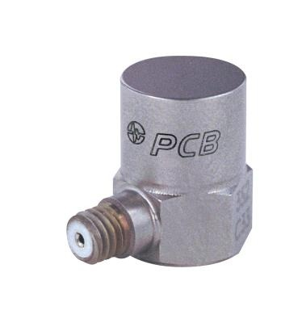
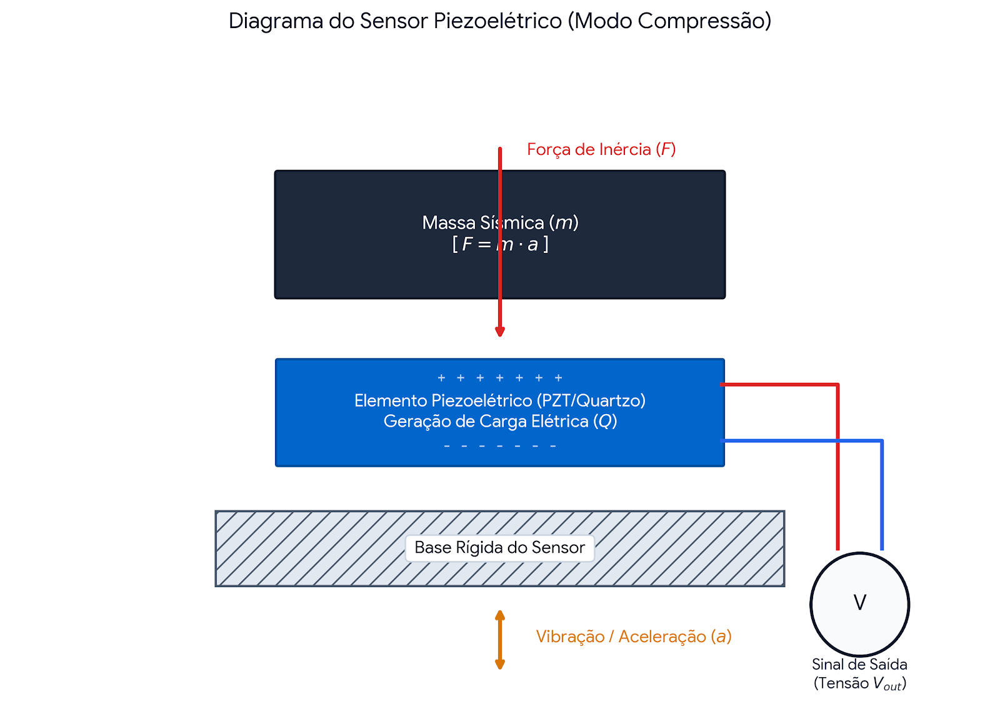
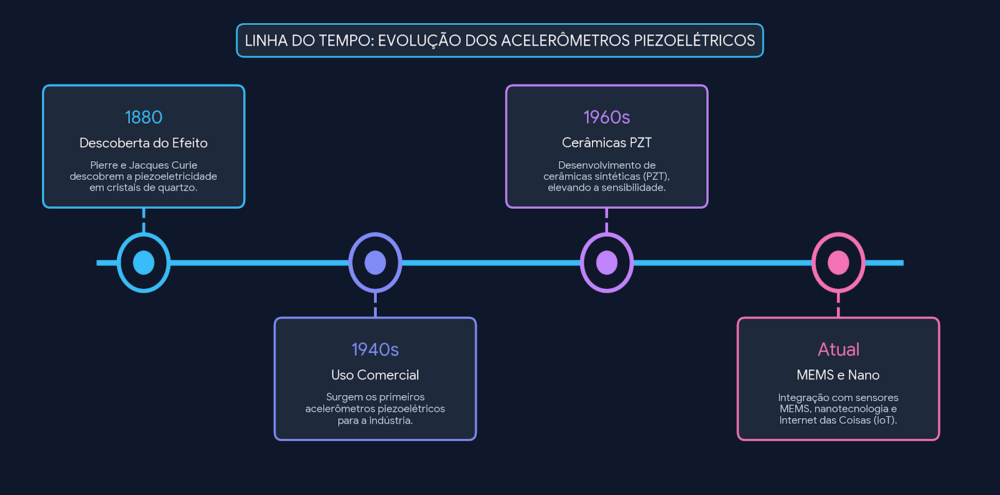
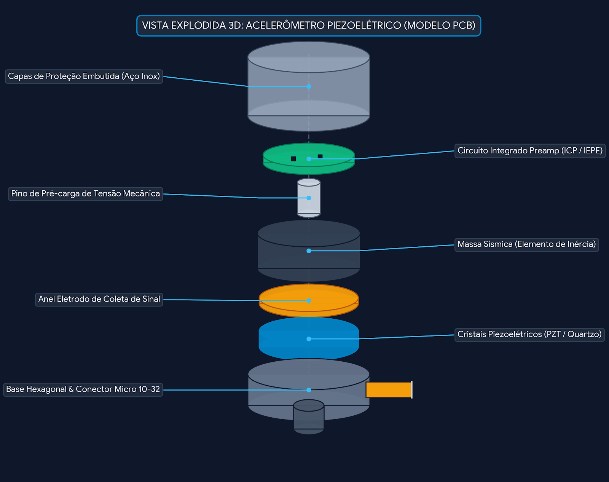

Acelerômetro Piezoelétrico
Princípios, Funcionamento e Aplicações
Seminário de Sensores e Instrumentação
Apresentado por: Eriko L. P. & Leonardo V. G.
Professor: Prof. Rogerio da Silva

Introdução
O que é um acelerômetro piezoelétrico?
Sensor que mede aceleração e vibração utilizando o efeito piezoelétrico para converter força mecânica em sinal elétrico.

Vantagens
- Não necessita de alimentação externa
- Alta sensibilidade
- Ampla faixa de frequência
- Robusto e durável
Limitações
- Não mede aceleração constante
- Sensível a temperatura
- Necessita de amplificador
História e Desenvolvimento

Efeito Piezoelétrico
Princípio Físico Fundamental
Quando certos materiais cristalinos são deformados, geram uma diferença de potencial elétrico.
Materiais Comuns
- Quartzo (SiO₂)
- PZT (Titanato Zirconato de Chumbo)
- PVDF (Polímero)
Fórmula Básica
Q = d × F
Onde:
- Q = Carga gerada
- d = Coeficiente piezoelétrico
- F = Força aplicada
Componentes do Sensor

Como Funciona
Processo de Medição
- Aceleração aplicada ao sensor
- Massa sísmica exerce força no cristal
- Cristal gera carga elétrica
- Sinal é amplificado e processado
Tipos de Montagem
- Compressão: Força aplicada verticalmente
- Cisalhamento: Força aplicada lateralmente
- Flexão: Deformação por curvatura
Características Técnicas
Especificações Típicas
- Sensibilidade: 10-100 mV/g
- Faixa de frequência: 0.5 Hz - 20 kHz
- Faixa de medição: ±50g a ±500g
- Impedância de saída: < 100 Ω
Fatores de Influência
- Temperatura
- Umidade
- Interferência eletromagnética
- Montagem inadequada
Aplicações Principais
Industrial
- Manutenção preditiva
- Monitoramento de máquinas rotativas
- Análise de vibração estrutural
Automotivo
- Sistemas de airbag
- Controle de estabilidade
- Suspensão ativa
Aeroespacial
- Monitoramento de turbinas
- Testes de vibração
- Navegação inercial
Biomédica
- Análise de marcha
- Próteses inteligentes
- Monitoramento cardíaco
Comparação com Outros Acelerômetros
Piezoelétrico vs MEMS
- Piezo: Alta frequência, robusto
- MEMS: Baixa frequência, compacto
- Piezo: Sem necessidade de energia
- MEMS: Requer alimentação constante
Piezoelétrico vs Piezoresistivo
- Piezo: Melhor para altas frequências
- Piezoresistivo: Mede aceleração DC (estática)
- Piezo: Mais sensível
- Piezoresistivo: Estável em baixas frequências
Calibração e Manutenção
Importância da Calibração
A calibração periódica garante precisão e confiabilidade das medições.
Métodos de Calibração
- Calibração por comparação
- Calibração absoluta
- Calibração por gravidade
Frequência Recomendada
- Uso intensivo: 6 meses
- Uso normal: 12 meses
- Após impacto ou queda livre
Datasheet do Componente
Especificações técnicas detalhadas do acelerômetro piezoelétrico selecionado.
Modelo de referência: PCB Piezotronics 352C33
Tendências Futuras
Inovações
- Sensores wireless e IoT
- Materiais piezoelétricos flexíveis
- Energy harvesting (colheita de energia)
Aplicações Emergentes
- Dispositivos Wearables
- Smart structures (Estruturas inteligentes)
- Robótica avançada
Conclusão
O acelerômetro piezoelétrico é fundamental para medição de vibrações e acelerações dinâmicas.
- Baseado no efeito piezoelétrico descoberto em 1880
- Excelente resposta para altas frequências e ambientes severos
- Ampla gama de aplicações industriais, automotivas e médicas
- Tecnologia madura, altamente confiável e em constante evolução